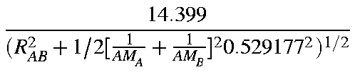
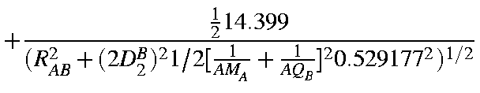

With all the component parts defined, the two-electron two-center integrals are assembled from the sum of all the interactions of the charges on one center with those on the other center. The distance between the two charges must be determined--this is the vector addition of R, the interatomic distance in Bohr, and the two c terms defining the location of the charges from the nucleus--as well as the appropriate additive terms, AM, AD or AQ selected. Two examples will illustrate this assembly:
<ss|ss>: This is represented by a single term. For
monopoles, c=0 and GA=AMA, GB=AMB giving:

<ss| pπpπ>:
pπpπ is expressed as the sum of a monopole
and a linear quadrupole. This gives rise to a total of four
charges, hence four terms. However, since the interaction
of the monopole with each of the two negative charges of the
dipole are the same, only three terms need to be evaluated.
In general, symmetry considerations lower the total number of
terms that need to be evaluated, so the maximum number in
any integral is 8. The full integral is then represented as:
|
<ss| pπpπ> |
= |
 |
|
|
|
|
 |
|
|
|
|
|
|
![$\displaystyle -\frac{14.399}
{(R^2_{AB}+1/2[\frac{1}{AM_A} + \frac{1}{AQ_B}]^20.529177^2)^{1/2}}.$](img470.gif)